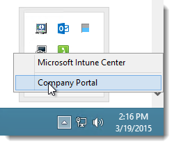
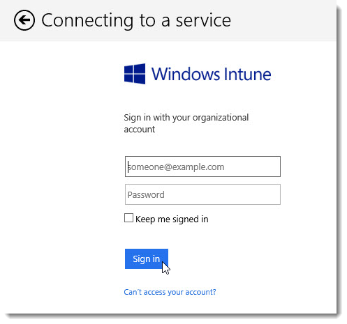
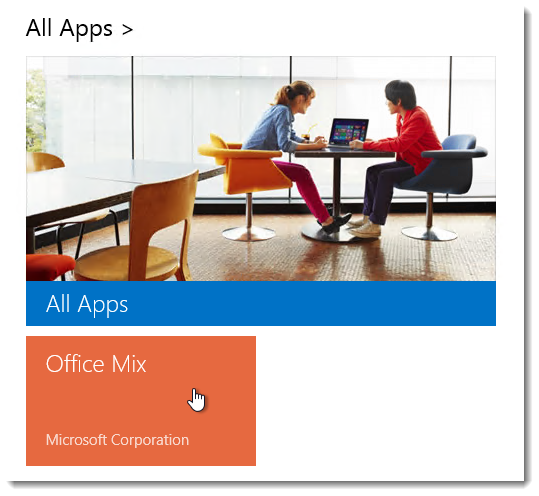
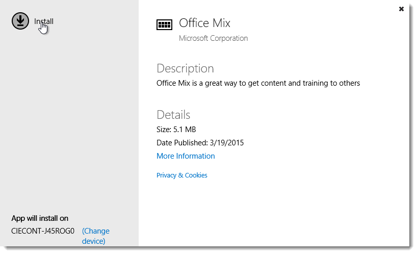
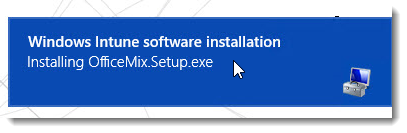
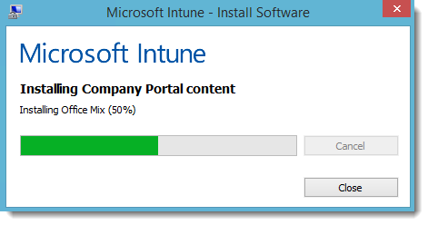
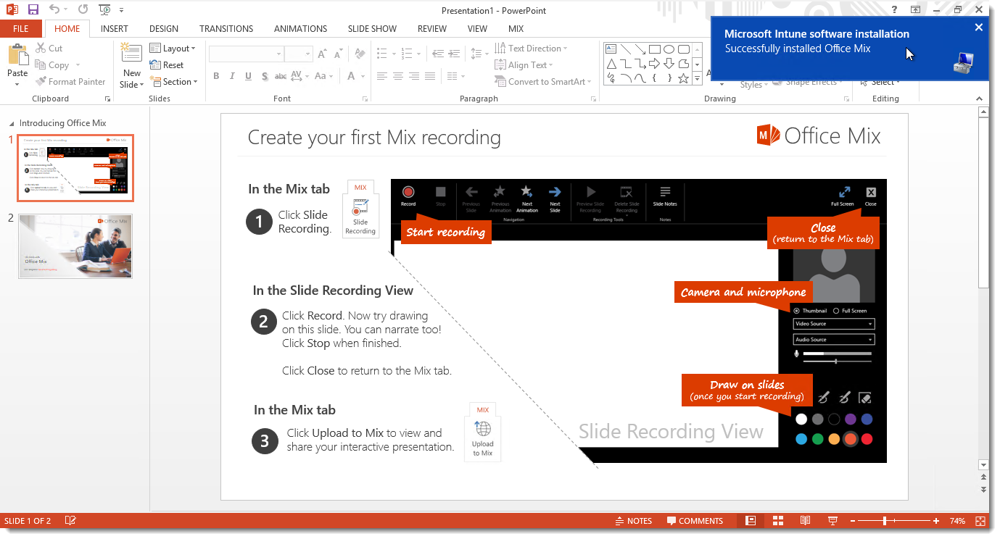
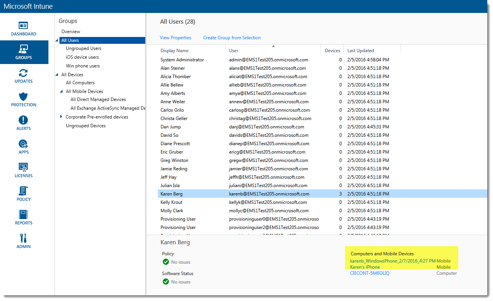
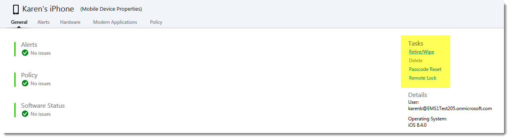

Karen and the team have just finished coauthoring a PowerPoint presentation for their meeting with Contoso’s Sales Network that afternoon. After they finalize the presentation, Karen thinks it would be nice to make a version of the presentation that meeting attendees, who are mostly store managers, can share with their employees later. She would like to be able to add video of her explaining the slides and include polling questions that allow store employees to provide feedback when it’s convenient for them.
Karen decides to visit Contoso’s self-service Windows Intune Center to see if there is any new software she can install to help her achieve this task.
In the system tray, she clicks on the arrow to show the applications and icons running in the background, including Microsoft Intune Endpoint Protection, as well as Microsoft Intune Center, which she will right-click in order to bring up the context menu and then left-click Company Portal.

If prompted, she enters her credentials and clicks Sign in.

From the Company Portal, Karen can find the software Contoso has made available to its employees. Employees can add software to their PC when the need arises without having to jump through administrative hoops or contact IT. This is especially helpful for employees who want to use their own devices to work in the environment most comfortable to them.
If for any reason, Contoso's IT department decides to rescind access to the software, they can easily remove it from the employee's machine through Windows Intune.
Karen finds the Office Mix add-in for PowerPoint and is able to download it from the cloud to her device quickly and easily.

She simply clicks on the tile and clicks Install.

She receives and clicks on the notification for the app installation to check its status.


Karen launches PowerPoint and opens a blank presentation. She can see that the Office Mix add-in has been installed. There are also instructions on how to create, publish, and share using Office Mix right in the presentation.

Using the Office Mix add-in, she will be able to edit the team’s PowerPoint presentation, which includes the additional features she needs and sends a link to the presentation to the meeting attendees so they can share it with their employees.
Karen then realizes she cannot find her phone and reaches out to the IT department to report the lost device. They are able to be proactive and remotely manage security for the phone just in case Karen does not find her phone.
The administrator navigates to the Windows Intune Management Console and clicks on All Users. They navigate to Karen Berg's record and locate the phone she has registered through the company portal.

The administrator clicks on Karen's phone to open the record and then clicks on Remote Lock under tasks. This will lock the phone to give Karen time to locate it.

If they know the phone is missing, they can also choose to Retire/Wipe the phone to make sure all company data is protected.
|